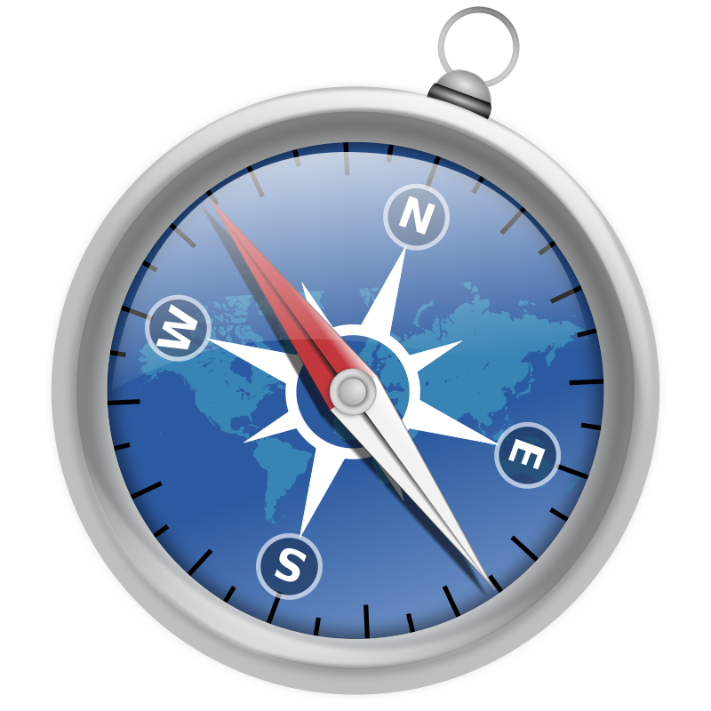

Ubicando los puntos cardinales
Ir tras la pista de la EEI te ayudará a conocer los puntos cardinales en tu entorno. Para mayor precisión, intenta descargar una brújula para celular o tablet.
La gran mayoría de dispositivos lo posibilitan y te darán los rumbos a los puntos cardinales de modo muy preciso.
Advertencia;
La salida y puesta del Sol son engañosas como ayuda para determinar los puntos cardinales.
En gran parte del año el Sol sale por el horizonte muy desplazado a la derecha o a la izquierda del punto ESTE.
No podemos decir que la salida del Sol marca el ESTE. Esto es cierto solamente en algunos momentos del año, pero eso es tema para otro día. Para mayor precisión es mejor utilizar una brújula magnética o del celular.
¿Hay brújulas para celulares?
Ciertamente sí. Activa el GPS de algún dispositivo móvil y descarga una brújula de la tienda de apps.
Sigue las instrucciones que te indique la aplicación. A medida que vayas practicando con la brújula, irás recordando los rumbos de los puntos cardinales con facilidad.
Y si tienes una brújula magnética en tu casa, pide que te enseñen a utilizarla. Parecen relojes que se usan horizontalmente con una pequeña aguja magnética.
¡La práctica hace a los expertos y expertas!